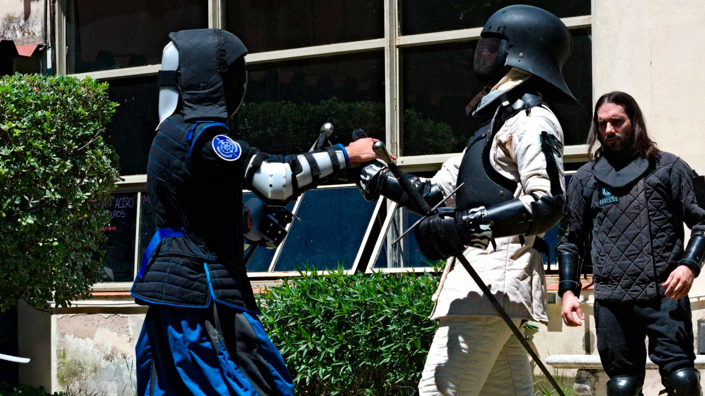
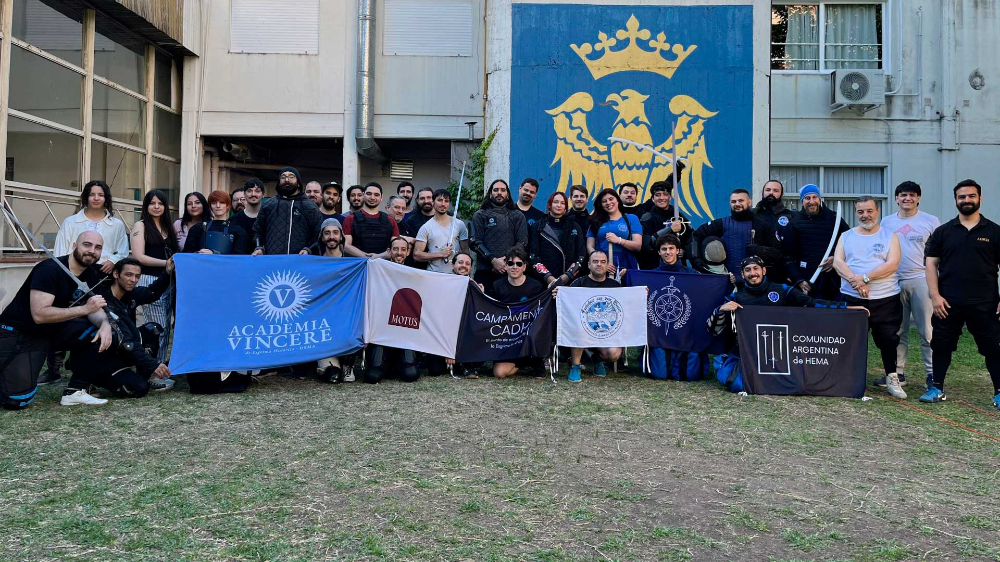
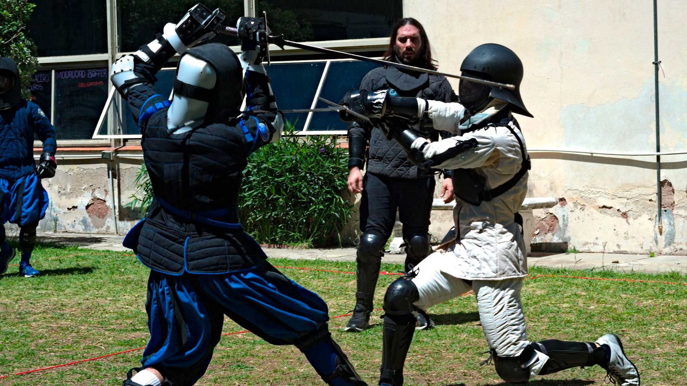

La comunidad más grande de Esgrima histórica / HEMA en Argentina
La CADH conecta a practicantes, instructores y clubes de HEMA en toda Argentina. Encontrá tu club más cercano, gente con quién entrenar y recursos para arrancar.
HEMAPA
Encontrá con quién practicar cerca tuyo
El HEMAPA es el mapa de practicantes de HEMA y esgrima histórica de Argentina. Clubes activos, practicantes solitarios y personas que quieren empezar — todo en un solo lugar.
Pensalo como un "Tinder" de la esgrima histórica: conectá con gente real, cerca tuyo, con las mismas ganas de practicar.
Registrarse es rápido: solo necesitás tu nombre, una ubicación de referencia y un medio de contacto.
La red HEMAPA
Encontrá con quién aprender HEMA
Clubes, grupos de estudio, practicantes en solitario e interesados en empezar, repartidos por todo el país. Esta es una muestra de quiénes forman parte — el detalle de contacto de cada uno está en el HEMAPA.
Clubes y academias
(7)Grupos de estudio
(4)Practicantes en solitario
(8)Interesados en empezar
(8)¿Qué estás esperando para empezar a practicar?
ContactarmeLa comunidad
La CADH en WhatsApp
El núcleo de la CADH es una Comunidad de WhatsApp con grupos para cada tema. Todos están invitados.
Chat general
Para charlar, compartir y debatir todo lo relacionado a HEMA.
Practicantes de Argentina
Grupo exclusivo para practicantes o interesados en practicar en Argentina.
Instructores
Conecta instructores de Argentina, Chile, Uruguay, Perú, Brasil, México, Colombia y España.
HEMARKET
Compra y venta de equipamiento, libros y material relacionado a HEMA.
Herrería y espadería
Todo sobre fabricación de espadas, con espaderos de nivel internacional.
Preguntas frecuentes
Todo lo que necesitás saber sobre el HEMA
¿Qué es el HEMA?
HEMA (Historical European Martial Arts), también conocido como esgrima histórica, es la reconstrucción de las artes marciales europeas a partir de manuscritos y manuales que enseñaban cómo combatir, desde la Baja Edad Media hasta el siglo XIX. En la práctica, es aprender a pelear con espada larga, sable, ropera y otras armas históricas, de la forma más cercana posible a como se hacía en la época de su uso, pero de forma segura y con fines recreativos o competitivos.
¿Es lo mismo que la recreación histórica?
No. Alguien que practica HEMA estudia técnicas de combate reales a partir de fuentes históricas, de forma similar a como alguien que practica kendo no es un samurái actuando un papel. El HEMA nació de la investigación académica y la arqueología experimental. Lo que se intenta recrear es la técnica, no la estética de una época en particular.
¿En qué se diferencia de la esgrima olímpica?
La esgrima deportiva u olímpica moderna evolucionó de la esgrima de espada y sable del siglo XIX, donde era común que la aristocracia se batiera a duelo o practicara de forma recreativa. Con el tiempo se establecieron reglas deportivas que optimizaron las técnicas para el desempeño competitivo, dejando de lado la faceta marcial. El HEMA recoge esa faceta marcial y es lo que busca recrear, por eso las armas son mucho más variadas: espada larga, sable militar, ropera, daga, lucha, armas astadas y más.
¿Es peligroso?
No más que cualquier otro deporte de contacto, siempre que se use el equipo de seguridad adecuado: careta, pechera, guantes y chaqueta para HEMA. Las espadas de entrenamiento son romas y flexibles, diseñadas para reducir el impacto de los golpes.
¿Necesito experiencia previa para empezar?
No. La mayoría de quienes empiezan HEMA no tuvieron ninguna experiencia previa en artes marciales ni esgrima. Solo hace falta ganas de aprender, los clubes enseñan desde cero.
¿Dónde puedo practicar HEMA en Argentina?
Consultá el HEMAPA: vas a encontrar un amplio listado de clubes, así como personas interesadas en practicar por su cuenta.
¿Hay alguna federación u organización oficial de HEMA en Argentina?
No. El HEMA, por su naturaleza, es una disciplina descentralizada, no existe una federación ni una entidad oficial que nuclee a todos los que lo practican en el país. Lo que sí existe son comunidades, clubes y grupos independientes, cada uno organizado a su manera. Ninguna comunidad es la "comunidad oficial de HEMA en Argentina".
¿Qué es exactamente la CADH?
Somos una Comunidad de WhatsApp que nuclea a la mayoría de los clubes del país. Hoy somos el grupo humano más activo de HEMA en Argentina, con más de un centenar de participantes diarios. En la sección Más sobre HEMA vas a encontrar toda la información que necesites.
No hay un club de HEMA cerca mío, ¿qué hago?
Podés sumarte igual a la comunidad de la CADH y buscar a otros interesados en tu zona a través del HEMAPA, para armar un grupo de estudio propio. También hay recursos (libros, canales de YouTube, manuales) para arrancar por tu cuenta mientras encontrás compañeros de entrenamiento, los tenés todos en la sección Recursos del sitio.